Para la transmisión de datos digitales, existen principalmente tres métodos de modulación que permiten alterar el ancho de banda sobre el cual será enviada la información. Estos tres métodos son muy empleados debido a su relativa sencillez ya que son ideales para la transmisión de datos digitales, ellos son:
 Archivos y Software
Archivos y Software
CAPITULO 3: CODIFICACIÓN DIGITAL DE SEÑALES ANALÓGICAS
- ASK (Amplitude Shift Keying).
- FSK (Frequency Shift Keying).
- PSK (Phase Shift Keying).
El ASK que es el método que nos atañe en especial, es una forma de modulación mediante la cual la amplitud de la señal está dada por la ecuación.
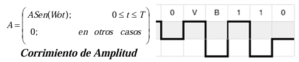
ASK entonces, puede ser descrito como la multiplicación de la señal de entrada f(t)=A (valido en sistemas digitales) por la señal de la portadora. Además, esta técnica es muy similar a la modulación en amplitud AM, con la única diferencia que para este caso m = 0.
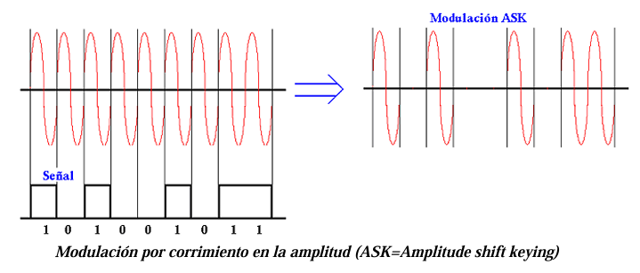
SEÑAL MASK
m_aria →Señal digital con m niveles de amplitud.
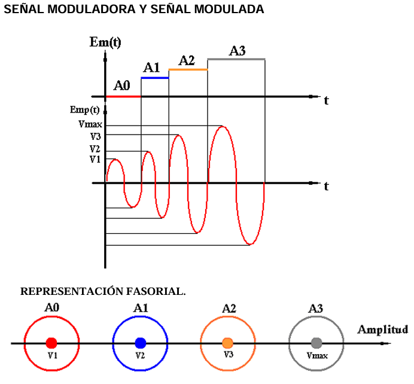
CIRCULO DE INDECISIÓN. - Es el lugar geométrico del espacio que delimita dentro de un valor fijo de probabilidad. Si la señal esta dentro del circulo de decisión genera su nivel correspondiente, si esta fuera del circulo no genera nada. Los círculos de decisión no deben ser secantes, ni tampoco tangentes.
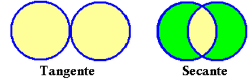
Una señal es regular cuando la amplitud entre los niveles es la misma
V1 = 2V V2 = 2V V3 = 2V Vmax = 2V → Regular
V1 = 2V V2 = 6V V3 = 14V Vmax = 16V → Irregular
- Señal digital binaria; dos niveles de amplitud.
- Ap(t) = Ep(t) = Amax Sen wt Para cada nivel de amplitud de la señal se tiene una amplitud de portadora.
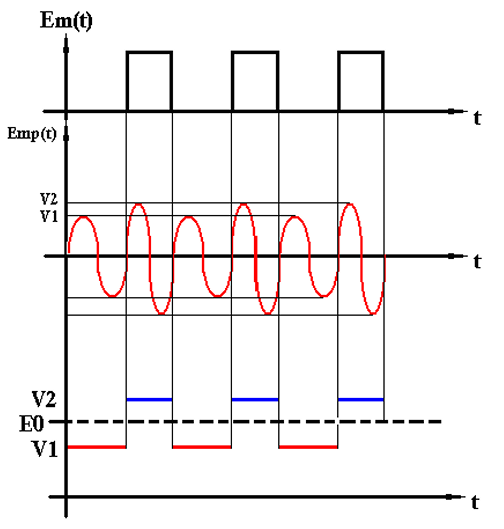
PORTADOR VIRTUAL
No tiene información ni en “1”, ni en “0” ayuda a detectar los equipos de Tx y Rx.
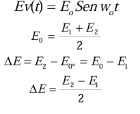
ÍNDICE DE MODULACIÓN (ma).
Profundidad con que se modula la señal.
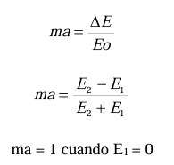
Circuitos Moduladores
- MODULADOR MASK
- MODULADOR BASK
- MODULADOR OOK
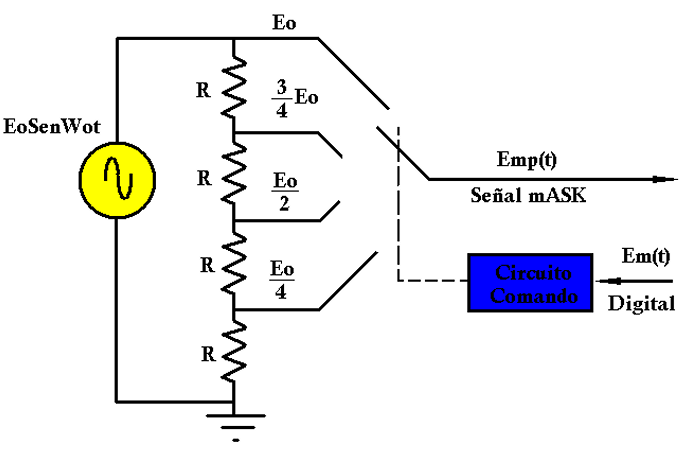
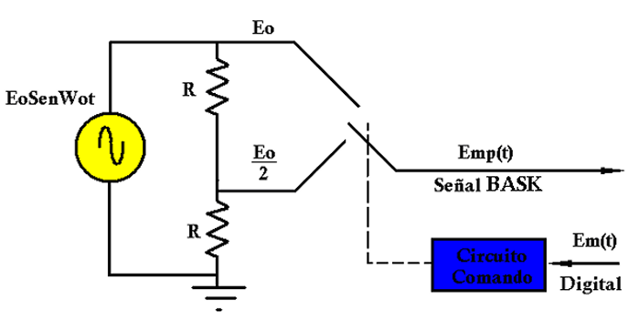
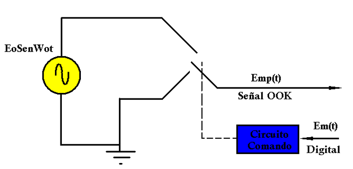
- DETECCIÓN DE ENVOLVENTE
- DETECCIÓN SINCRONA
Un detector de envolvente ideal es un circuito que produce una forma de onda en su salida que proporciona la envolvente real, R(t), de su entrada. De acuerdo con la ecuación Vsalid (t)=KR(t)
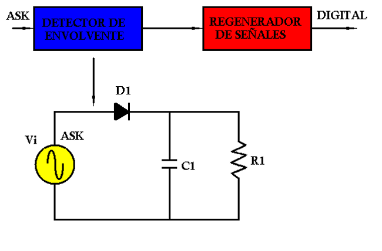
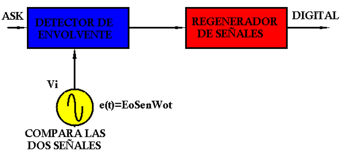
- MFSK
- BFSK
Trabaja con una señal digital multinivel ,m_aria.
A cada nivel de la señal le corresponde una frecuencia portadora .
Trabaja con una señal binaria es decir en la señal modulada tendríamos únicamente dos frecuencia.
- Fase cambia.
- Amplitud Constante.
- Frecuencia Constante.
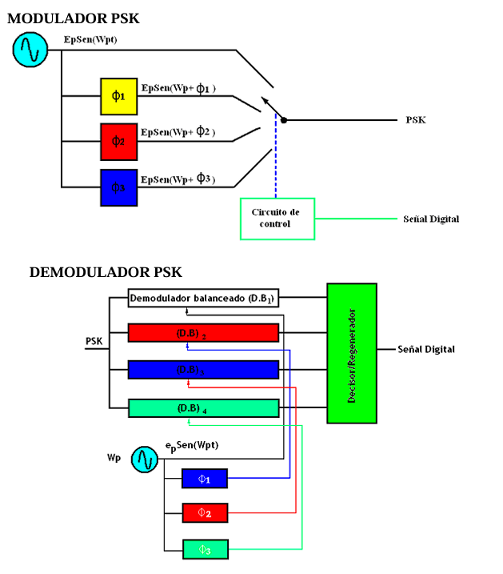
CIRCUITOS MODULADORES Y DEMODULADORES.
- SEÑAL MPSK
- SEÑAL BPSK
- SEÑAL PRK.
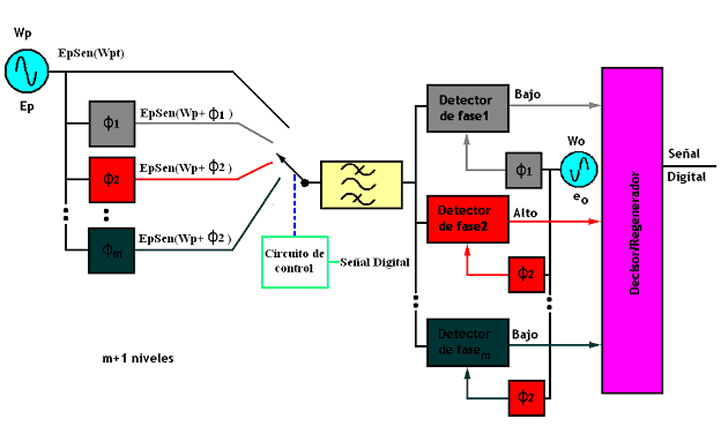
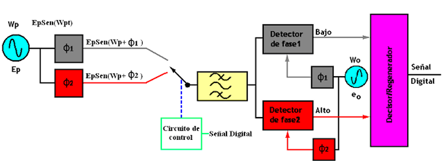
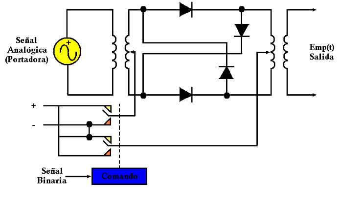
CIRCUITOS DEMODULADORES
- CONVENCIONAL
- BALANCEADOS
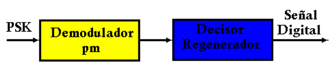
Con señal binaria no hay problemas
Con señal multinivel existe problemas.
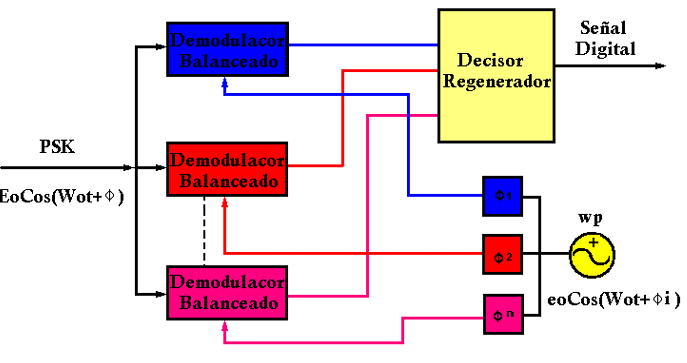
Las señales que ingresan al demodulador deben ser síncronas en frecuencia y coherentes en fase (Fases deben mantenerse un tiempo determinado). La amplitud puede ser la misma pero no necesariamente.
SISTEMA COHERENTE Y DIFERENCIAL
Las señales deben ser sincrónicas en frecuencia y coherentes en fase se debe garantizar que la coherencia se dé tanto en el lado del transmisor como el receptor (A) propagarse las señales sufren un retardo de grupo o se desfasan.
- DETECCIÓN SÍNCRONA CON OSCILADOR LIBRE.
- DETECCIÓN SÍNCRONA CON FASE CERRADA (LAZO CERRADO)
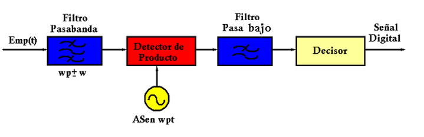
Con dos niveles digitales el circuito trabaja correctamente, pero con mas niveles digitales existe problemas por los desfases ya que el decisor no puede identificar a que nivel lógico corresponde la señal (fase).
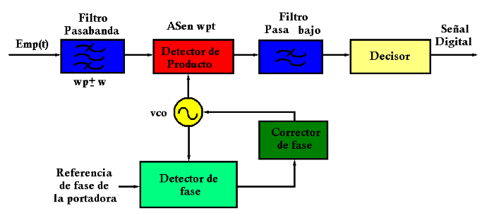
Referencia de fase de la portadora se puede obtener de la señal que esta llegando originalmente o se puede generar localmente.
DIGITALIZACIÓN DE SISTEMAS ANÁLOGICOS
VENTAJAS
- Los impulsos digitales son menos susceptibles a variaciones causadas por ruido que las señales analógicas.
- Las señales digitales se prestan mejor a su procesamiento y multiplexado que las señales analógicas.
- Los sistemas digitales de Tx son más resistentes al ruido que las analógicas, ya que las digitales usan regeneradores de señal y no usan amplificadores de señal.
- Es más fácil de medir y evaluar las señales digitales, obtener la eficiencia con capacidades distintas de señalización e información.
- En los sistemas digitales se adaptan más para evaluar el funcionamiento de errores.
DESVENTAJAS
- La TX de señales analógicas codificadas digitalmente requiere un AB mayor que una señal analógica original.
- Las señales analógicas se deben convertir en códigos digitales antes de su Tx y reconvertirse a la forma original en el receptor teniendo circuitos adicionales como codificador y decodificador.
- La Tx digital requiere sincronización precisa entre los CLK del Tx y Rx, elevados costos de estos equipos.
- Los sistemas digitales son incompatibles en los sistemas analógicos.
Muestreo
Es tomar muestras discretas de una señal continua en el tiempo La amplitud de los pulsos muestreados debe ser directamente proporcional a la amplitud de la señal analógica en el instante del muestreo.
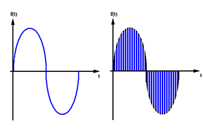
Teorema del muestreo.
- La frecuencia de muestreo debe ser el doble de la frecuencia máxima presente en la señal.
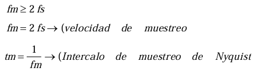
CUANTIFICACIÓN
Es un proceso de aproximar valores muestreados a niveles de cuantificación (niveles de voltaje predeterminado). La aproximación se realiza matemáticamente.
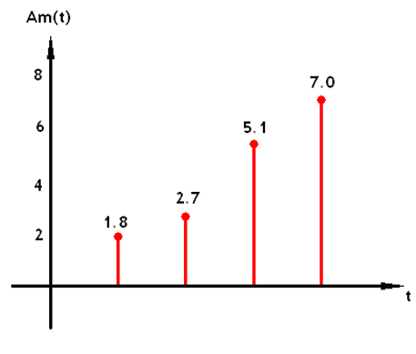
CODIFICACIÓN
La codificación es un proceso por el cual se asignar un conjunto de bits o secuencia de ceros o unos lógicos (binarios) a cada valor cuantificación.
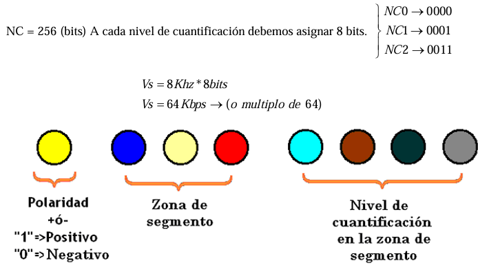
BIBLIOGRAFÍA
- F. Mendioroz, Telefonía Móvil Celula, 2015.
- P. Turmero, «monografias,» [En línea]. Available: https://www.monografias.com/trabajos103/telefonia-celular-sistema/telefonia-celular-sistema.shtml.
- C. G. GAIBOR, «uta.edu.ec,» [En línea]. Available: https://repositorio.uta.edu.ec/bitstream/123456789/395/3/Tesis_t139ec.pdf.
- W. Salazar, «repositorio.umsa.bo,» [En línea]. Available: https://repositorio.umsa.bo/xmlui/bitstream/handle/123456789/13487/PG-1904-Salazar%20Luna%2C%20Wilmer.pdf?sequence=1&isAllowed=y.
- J. &. A. L. ARGUELLO, Diseño e implementación de un prototipo de antena, Sangolqui, 2009.
- D. Boza, «slideshare,» [En línea]. Available: https://es.slideshare.net/marboza/deximarbozaact7
- F. Isai, «slideshare,» [En línea]. Available: https://es.slideshare.net/FranklinIsaiLeonhuacal/presentacion-propagacion-en-sistemas-celulares.
- C. Guital, E. Muñoz y N. Fierro, «Antenas inteligentes y su desempeño en redes wireless,» 2007. [En línea]. Available: http://revistas.uach.cl/pdf/sintec/v3n2/art05.pdf.
-
Modulación en portadora sinusoidal para moduladora

-
Señal Mask
-
Postador virtual
-
Circuitos moduladores
-
Familia FSK
-
Familia PSK
-
Circuitos moduladores y demoduladores.
-
Circuitos demoduladores
-
Sistema coherente y diferencial
-
Digitalización de sistemas analógicos
-
Muestreo
-
Cuantificación
-
Codificación
-
BIBLIOGRAFÍA